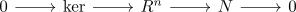
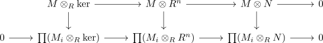
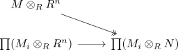
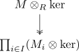
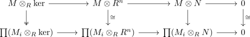

chase theorem about flat modules
Proposition
Let \(R\) be a commutative ring.
TFAE:
- categorical products of flat modules are flat
- every finitely generated submodule of a free module is finitely presented
- $R$ is a coherent ring
Proof
1) $\implies$ 2)
by finitely generated submodule of a free module as submodule of a finitely generated free module we may assume w.l.o.g. that $B$ is finite
It remains to show that the kernel of
is a finitely generated submodule
For $y \in \mathrm{ker}$ let
and set
2) $\implies$ 1)
Let $M_i$ be flat modules and $M \coloneqq \prod_{i \in I} M_i$ the product.
$N$ finitely generated modules
Let $N$ be a finitely generated moduel. Then choose an module-epimorphism and the exact sequence.

Then applying the tensor functor $- \otimes_R M$ results in the exact sequences
and the commutative diagram

Note that $\mathrm{RMod}$ is Ab4 opp (cf.category RMod opp as AB4 category) and therefore the functor
is exact as composition of exact functors
Then the middle morphism
is an isomorphism (cf. tensor product with finitely generated free module commutes with limits)
Therefore

is an epimorphism and moreover
(cf. precomposition as epimorphism implies epimorphism)
Since $\mathrm{ker}$ is also finitely generated, we conclude by similar reasoning that the map

\end{align*} is also an epimorphism by setting $\mathrm{ker} = N$.
using the 4-lemma for monos / Four-Lemma of modules of monomorphisms for

we conclude that the map
is a monomorphism and hence an isomorphism (cf. abelian category as balanced category)
Since $\mathrm{ker} \subseteq R^n$ is a submodule of a free module, hence by assumption finitely presented, we may repeat this argument showing that the induced map
is an iso
Therefore the exact sequences
are isomorphic
Moreover this shows
for every finitely presented module $N$ by similar reasoning to tor 1 as zero and tensor as exact
$N$ arbitrary
follows from module as filtered colimit of finitely presented modules and tor functor commutes with filtered colimits showing